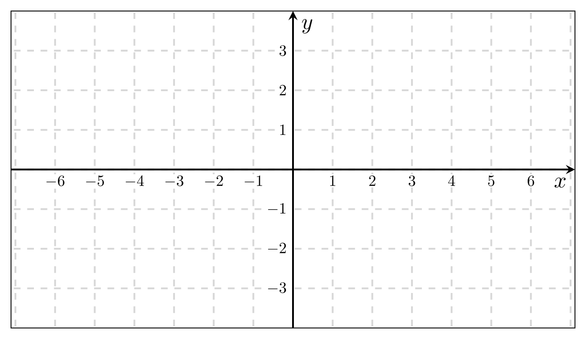
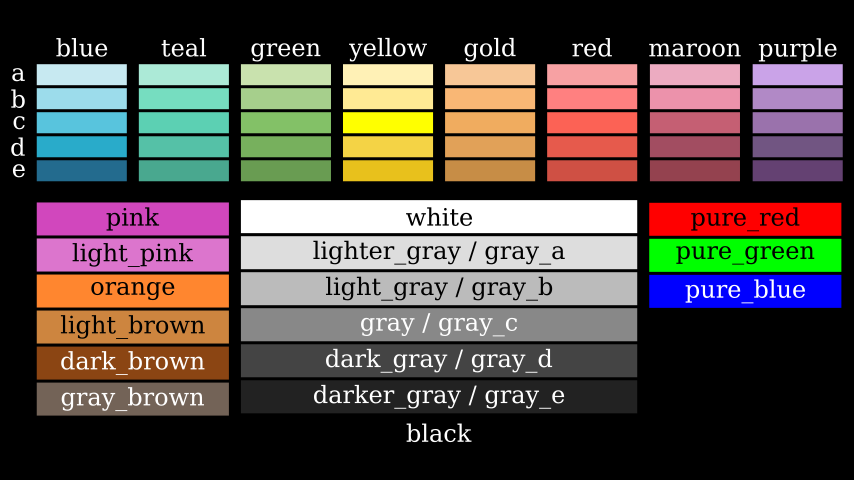

Basic attributes of Mobjects¶
If you want to see a tree of what inheritance is like between Mobjects you can see the following diagram (created by the ManimCE community).
Camera dimensions¶
Before studying the attributes of Mobjects it is necessary to know the basic characteristics of the camera.
By default, the Camera is 8 units high, and since the aspect ratio is 16/9, the width can be easily calculated. These 8 units are independent of the rendering resolution (480p, 720p, etc), so there is no need to worry about that.

The coordinates of each Mobject are a three-dimensional array, and the coordinate \([0,0,0]\) is located in the center of the camera.
For now, we will not worry about the 3rd dimension, we will focus only on the x, y coordinates.
Note
These values can be changed but it is not recommended.
Basic attributes¶
All Mobjects have four main attributes:
Position
Width
Height
Z index
We won’t study Z index in this section until Section 4.
To start studying the properties we will create a rectangle and add it on the screen, I recommend the student to use Jupyter-Notebook to study these first sections. We will omit the scene name to save space.
def construct(self):
req = Rectangle()
self.add(req)
Position¶
Manim already has some constants that will help us locate our Mobjects, which are:
Origin:
ORIGIN = np.array([ 0, 0, 0])
One-dimensional vectors:
UP = np.array([ 1, 0, 0])
DOWN = np.array([-1, 0, 0])
RIGHT = np.array([ 0, 1, 0])
LEFT = np.array([ 0,-1, 0])
Two-dimensional vectors:
UR = np.array([ 1, 1, 0])
UL = np.array([-1, 1, 0])
DR = np.array([ 1,-1, 0])
DL = np.array([-1,-1, 0])
When we instantiate a Mobject, it is always located by default in the center of the screen, that is, in the location \([0,0,0]\).
If we want to place this object in another position, there are two positioning systems:
Absolute Position: Use as reference the coordinates of the camera or the current location of our Mobject.
Mobject.move_to()Mobject.shift()
Relative Position: We use another Mobject or coordinate as a reference to locate our Mobject.
Mobject.to_edge()Mobject.to_corner()Mobject.next_to()Mobject.align_to()
Absolute Position¶
Mobject.move_to()¶
This method requires a three-dimensional array (coordinate) to locate an object on the screen, always use the center of the camera center as a reference.
Warning
Remember that if you place a Mobject outside the limits of the camera then your Mobject will not be visible in your animation, although Manim will have computed it.
def construct(self):
req = Rectangle()
req.move_to([-3,2,0])
self.add(req)

In general, it is advisable to convert your coordinates to np.array, or to use linear combinations of the one-dimensional or two-dimensional vectors to locate your objects.
def construct(self):
r = Rectangle()
c = Circle()
e = Ellipse()
# Best practice
r.move_to( np.array([-3, 2, 0]) )
# Other way
c.move_to( LEFT * 3 + UP * 2 )
# Another way
e.move_to( UL * 2 + LEFT )
self.add(r,c,e)
Mobject.shift()¶
This method is similar to move_to, but the difference is that move_to always refers to the center of the camera (the origin), while shift refers to the current position of your Mobject.
To differentiate it, let’s look at the following case:
def construct(self):
s = Square()
c = Circle()
# Apply move_to 4 times
for _ in range(4):
s.move_to(RIGHT)
# Apply shift 4 times
for _ in range(4):
c.shift(RIGHT)
self.add(s,c)
If we apply the same move_to 4 times, then it is redundant, because the movement always takes the center of the camera as a reference.
But applying shift 4 times is different, because each shift takes the new Mobject coordinates as a reference.
This can be made even clearer with an animation:
def construct(self):
s = Square()
c = Circle()
self.add(s,c)
for _ in range(4):
# Pause
self.wait()
# Move
c.shift(RIGHT)
s.move_to(RIGHT)
You can notice that at the beginning both appear in the center of the camera, then the first cycle of the loop is applied and both move once to the right, but the second time only the circle (to whom the shift is applied) is it keeps moving, because the new shift (of the following loops) takes the new Mobject (circle) coordinates as a reference.
Mobject.get…¶
To obtain the coordinates of an object we can use the following getters:
def construct(self):
r = Rectangle()
self.add(r)
center = r.get_center()
right = r.get_right()
left = r.get_left()
top = r.get_top()
bottom = r.get_bottom()
up_right = r.get_corner(UR)
up_left = r.get_corner(UL)
down_right = r.get_corner(DR)
down_left = r.get_corner(DL)
for n,p in zip(
["C" ,"R" ,"L" ,"T","B" ,"UR" ,"UL" ,"DR" ,"DL"],
[center,right,left,top,bottom,up_right,up_left,down_right,down_left]
):
t = Text(f"{n}",color=RED)
t.move_to(p)
self.add(t)
Warning
It is important to note that .get_center() does not get the geometric center or center of mass of the Mobject. What .get_center() does is “create” an imaginary rectangle whose borders contain the entirety of your Mobject and then it returns the coordinates of that rectangle. If you need to obtain the center of mass of a Mobject use get_center_of_mass().
Also exists:
Mobject.get_x() # <==> Mobject.get_center()[0]
Mobject.get_y() # <==> Mobject.get_center()[1]
Mobject.get_z() # <==> Mobject.get_center()[2]
# N is some real number
Mobject.set_x(N) # <==> Mobject.move_to(RIGHT * N)
Mobject.set_y(N) # <==> Mobject.move_to(UP * N)
Mobject.set_z(N) # <==> Mobject.move_to(OUT * N)
Relative Position¶
Mobject.to_edge()¶
This method moves vertically or horizontally to some edge of the camera, takes a one-dimensional vector as an argument and moves the Mobject in that direction to the edge.
Examples:
def construct(self):
req = Rectangle()
req.to_edge(LEFT)
self.add(req)
def construct(self):
req = Rectangle()
req.to_edge(UP)
self.add(req)
We can even use this method twice to move an object to a corner:
def construct(self):
req = Rectangle()
req.to_edge(UP)
req.to_edge(LEFT)
self.add(req)

This method admits a parameter called buff (buffer), this parameter indicates a gap between the border and your object, by default the value of this buffer is 0.5 units, but we can reduce this gap to zero using:
def construct(self):
req = Rectangle()
req.to_edge(UP)
req.to_edge(LEFT,buff=0)
self.add(req)

Mobject.to_corner()¶
This method requires a two-dimensional vector, and places your Mobject in the corner. It is equivalent to using Mobject.to_edge() twice. It also supports the buff parameter.
def construct(self):
req = Rectangle()
req.to_corner(UL)
self.add(req)

def construct(self):
req = Rectangle()
req.to_corner(DR,buff=0)
self.add(req)
Mobject.next_to()¶
This method uses the edge of a Mobject/point and positions our Mobject in the direction of that edge, the format is as follows:
Mobject.next_to(REFERENCE_MOBJECT_OR_POINT, DIRECTION, buff=BUFFER, aligned_edge=EDGE)
Here we see some examples:
def construct(self):
# Reference Mobject:
rm = Rectangle()
# Mobjects that we want to move:
red_dot = Dot(color=RED)
blue_dot = Dot(color=BLUE)
green_dot = Dot(color=GREEN)
t = Text("Some text")
# Set positions
red_dot.next_to(rm, LEFT)
blue_dot.next_to(rm, LEFT, buff=0)
green_dot.next_to(rm, DR, buff=0)
t.next_to(rm, DOWN, aligned_edge=LEFT)
# -----------------
# Delete this parameter and see what
# happens, then change LEFT to RIGHT
self.add(
rm,
red_dot,
blue_dot,
green_dot,
t
)
You can notice that .next_to() will never move a Mobject to the center of another Mobject, it always takes as a reference the edge that you indicate in the second argument.
The parameter aligned_edge allows you to align your Mobject with the edge of the reference Mobject.
Mobject.align_to()¶
This is a somewhat complicated method to understand, but quite useful, its behavior is similar to what you saw with the aligned_edge parameter of .next_to().
def construct(self):
c = Circle()
c.move_to(RIGHT * 3 + UP * 1.5)
r = Rectangle()
r.align_to(c,RIGHT)
self.add(c,r)
Also works with corners:
def construct(self):
r = Rectangle()
r.move_to(RIGHT * 3 + UP * 1.5)
t = Text("Hello")
t.align_to(r,UR)
self.add(r,t)

Width and Height¶
Setting¶
Obviously, all Mobjects have height and width, additionally, three-dimensional Mobjects also have depth. To be able to modify them it is very simple:
def construct(self):
c = Circle()
r = Rectangle()
# replace "width" with "height
# and see what happens
c.width = 3
r.width = 3
self.add(c,r)

We can also pass the width from one Mobject to another like this:
def construct(self):
c = Circle()
r = Rectangle()
# replace "width" with "height
# and see what happens
c.width = r.width
# or
c.scale_to_fit_width(r.width)
# c.scale_to_fit_height(r.height)
self.add(c,r)
Another way to define the width or height is using the .set method:
def construct(self):
c = Circle()
r = Rectangle()
# replace "width" with "height
# and see what happens
c.set(width=3)
r.set(width=3)
self.add(c,r)
Stretch¶
If you don’t want the proportions of your Mobject to be kept when changing the width or height then you can use .stretch_to_fit_height() or .stretch_to_fit_width():
def construct(self):
c = Circle()
t = Triangle()
r = Rectangle()
t.stretch_to_fit_height(c.height)
r.stretch_to_fit_width(c.width)
t.move_to(c.get_center()) # What happend if you remove this line
self.add(c,t,r)

Scale¶
def construct(self):
# Original circle
c_original = Circle(color=RED)
# x2
c_x_2 = Circle(color=WHITE)
c_x_2.scale(2)
# x3
c_x_3 = Circle(color=BLUE)
c_x_3.scale(3)
# x 1/3
c_x_1_3 = Circle(color=GREEN)
c_x_1_3.scale(1/3)
self.add(
c_original,
c_x_2,
c_x_3,
c_x_1_3
)

Apply Matrix¶
As its name indicates, it applies a linear transformation to a Mobject, you can use the following image as a reference. This is a generalization of all the properties previously seen.
def construct(self):
sq_phantom = Square()
sq = Square(color=RED)
ANGLE = PI / 6
# Reference point
POINT = sq.get_corner(DL)
matrix = [
[1,np.tan(ANGLE),0],
[0,1,0],
[0,0,0]
]
sq.apply_matrix(matrix,about_point=POINT)
self.add(sq_phantom, sq)
VMobject attributes¶
The previously studied properties work for any Mobject, now we will study the properties that only VMobjects have. The most common VMobjects are:
SVGMobjectSome Subclasses:
Text,Tex,MathTex,MarkupText, etc.
Geometry VMobjects:
Line,Arrow,Circle,Rectangle, etc.
Color palette¶
ManimCE’s official documentation gives us all the default colors:
You must write them in capital letters.
Note
The colors of type “C” have an alias equal to the colorname without a letter, e.g.
GREEN = GREEN_C
You can define the color using the hexadecimal format, with RGB or with HSL:
def construct(self):
from colour import Color
def HSL(hue,saturation=1,lightness=0.5):
return Color(hsl=(hue/360,saturation,lightness))
red_dot = Dot(color=RED) .scale(4) .to_edge(UP)
blue_e_dot = Dot(color=BLUE_E) .scale(4) .to_edge(DOWN)
hex_dot = Dot(color="#FE298D") .scale(4) .to_edge(LEFT)
rgb_dot = Dot(color=rgb_to_color([0.2,0.9,0])).scale(4)
hsl_color = Dot(color=HSL(45,1,0.5)).scale(4) .to_edge(RIGHT)
self.add(
red_dot, blue_e_dot,
hex_dot, rgb_dot, hsl_color
)

Stroke width, fill and opacity¶
def construct(self):
background_square = Square(
fill_opacity=1,
fill_color=WHITE,
)
background_square.scale(1.5)
circle = Circle(
# stroke options
stroke_width=20,
stroke_color=TEAL,
stroke_opacity=0.5, # 0 <= stroke_opacity <= 1
# fill options
fill_opacity=0.5, # 0 <= fill_opacity <= 1
fill_color=ORANGE
)
self.add(
background_square,
circle
)

A quick way to set a color is using .set_color(SOME_COLOR), in case you have already defined the color of the stroke width or the fill, both properties will take the color that you indicated in the .set_color() method.
def construct(self):
c = Circle(
stroke_color=PINK,
stroke_width=30,
stroke_opacity=0.4,
fill_opacity=0.6,
fill_color=ORANGE
)
c.set_color(RED)
self.add(c)

Points, start and end¶
As we explained at the beginning, all VMobjects are bézier curves, and therefore have control points, you can visualize them quite easily:
def construct(self):
c = Circle()
# c.points are the control points
for p in c.points:
d = Dot().move_to(p)
self.add(d)
self.add(c)
You can even modify the points at runtime:
def construct(self):
c = Circle()
c.points[4] += LEFT
for p in c.points:
d = Dot().move_to(p)
self.add(d)
self.add(c)

In general, this type of manipulation is not useful, but with this we can obtain the starting and ending point of our path. In general, this type of manipulation is not useful, but thanks to this we can obtain the starting and ending point of our path. It is very useful when we use it with Line or similar.
def construct(self):
arrow = Arrow(LEFT,UR)
arrow.shift(LEFT+DOWN)
arrow_start = arrow.get_start() # same as arrow.points[0]
arrow_end = arrow.get_end() # same as arrow.points[-1]
dot_start = Dot(color=RED).move_to(arrow_start)
dot_end = Dot(color=BLUE).move_to(arrow_end)
self.add(arrow, dot_start, dot_end)
Copies and setters¶
Sometimes it is convenient to copy an instance of a Mobject, to do this we can use the .copy() method.
def construct(self):
original_circle = Circle(
radius=2,
stroke_color=PINK,
stroke_width=30,
stroke_opacity=0.4,
fill_opacity=0.6,
fill_color=ORANGE
)
original_circle.to_edge(LEFT)
copy_circle = original_circle.copy()
copy_circle.to_edge(RIGHT)
# set_color
copy_circle.set_color(RED)
# set_stroke
copy_circle.set_stroke(color=TEAL,width=50,opacity=1)
# set_fill
copy_circle.set_fill(color=PURE_BLUE,opacity=1)
another_copy_circle = copy_circle.copy()
another_copy_circle.move_to(ORIGIN)
# set_style
another_copy_circle.set_style(
stroke_width=30,
stroke_color=WHITE,
stroke_opacity=0.5,
fill_color=PURE_GREEN,
fill_opacity=0.3,
)

As you can see, it is possible to change the thickness and padding properties after the instance, either by using .set_stroke(), .set_fill(), or by using .set_style().
Note
The .copy() method works with any Mobject, not just VMobjects.
Exercises¶
Create a grid in which you can see the coordinates of the screen:

Draw the Yin-Yang symbol.
Draw the VUE.js logo.